AnyPortrait > Manual > Bone Constraints
When moving characters in a game, there are times when a bone must stay within a specific range of motion.
For instance, you might need to prevent elbows or knees from rotating beyond their physical limits or ensure that hands and feet remain within a certain area.
Instead of manually controlling such movements with keyframes every time, it is highly beneficial to have a feature that automatically constrains a bone's transform to a specific range.
Bone Constraint is a feature that automatically restricts bone movement in this way.
Since this feature also supports constraints driven by IK, it will prove useful in a variety of situations.
This page explains the options related to Bone Constraints, along with examples of their use.
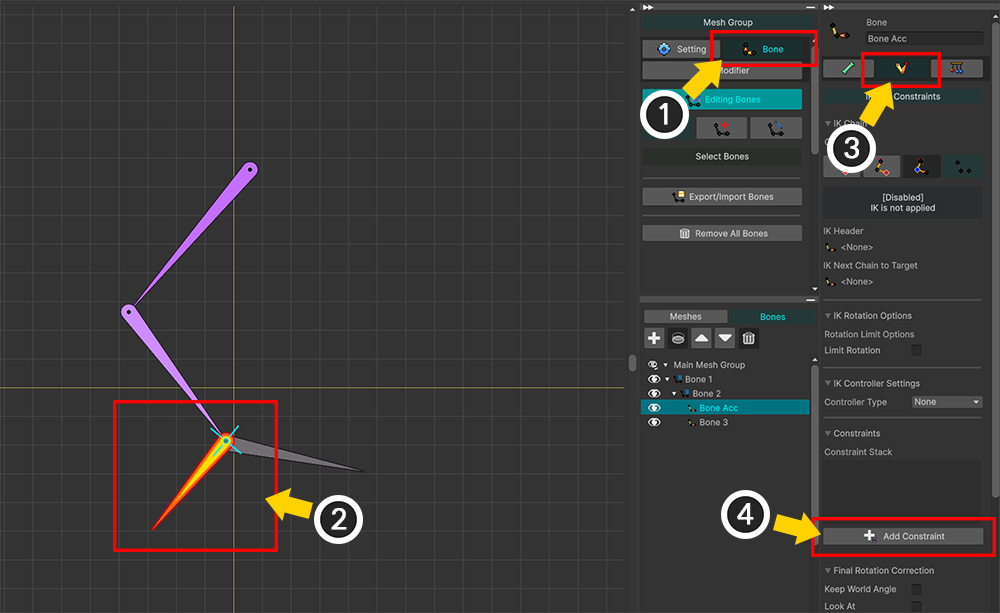
Let's apply a Bone Constraint.
(1) Select the Bone tab on the mesh group editing screen.
(2) Select the bone to which you want to apply the constraint.
(3) Select the IK and Constraints tab.
(4) Click the Add Constraint button.
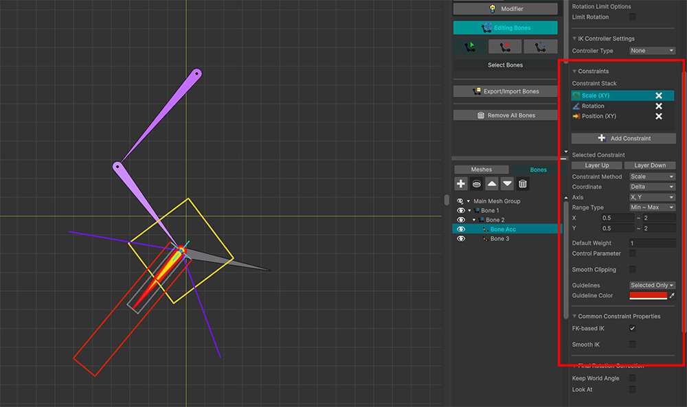
When you add a Bone Constraint, you can see various options appear, as shown above.
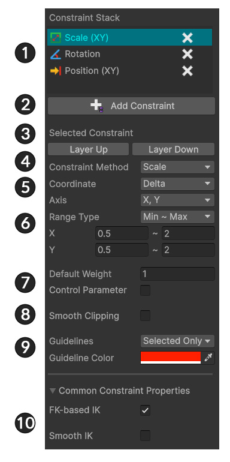
1. Constraint Stack : Displays the added bone constraints. You can select a constraint to edit or click the X button to delete it.
2. Add Constraint : Button to add a bone constraint.
3. Layer Up/Down : Adjusts the calculation order of bone constraints. If constraints share the same calculation timing, the one lower in the list is calculated first.
4. Constraint Method : Specifies the type of transform to which the constraint applies.
5. Coordinate : Defines the coordinate system used for the constraint's calculation. Depending on the option selected, the calculation timing may also change.
6. Axis, Range : Specifies the axis and range values for the constraint.
7. Weight : Determines the strength of the constraint's effect; control parameters can also be linked here.
8. Smooth Clipping : Enables a smooth transition for the constraint as it approaches the edge of its range.
9. Guidelines : Options for visually displaying the constraint range within the workspace.
10. Common Options : Options that apply to the relevant bone constraints.
Let's explore the Bone Constraint options with a few examples.
You can restrict a bone's position using the "Position" constraint.
By setting the Coordinate value to "Delta," you can limit movement caused by modifiers or animations relative to the parent bone.
Let's examine the effects of the "Position + Delta" constraint while also looking at the other options.
Caution
This method limits bone movement values resulting from modifiers or animations.
If the target bone is connected to a parent bone via an IK chain, you cannot edit the bone's position using the gizmo.
It is recommended to disable the IK chain before setting up the constraint.
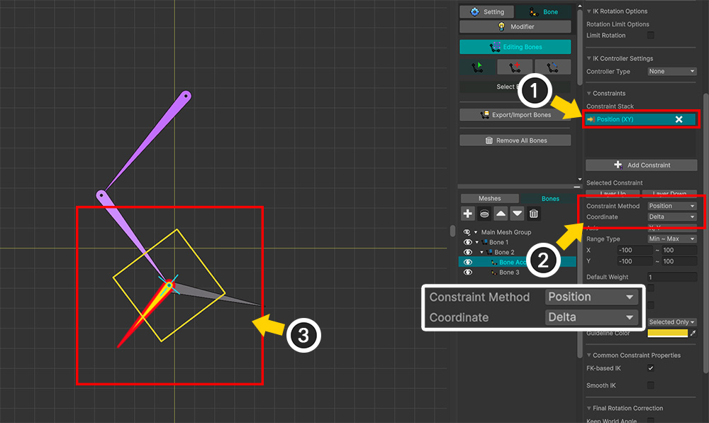
(1) Click the Add Constraint button to add a new Bone Constraint and select it from the list.
(2) Set the Constraint Method to "Position" and the Coordinate to "Delta."
(3) You will see a rectangular guideline drawn around the selected bone in the workspace. This guideline indicates the range of the currently applied constraint.
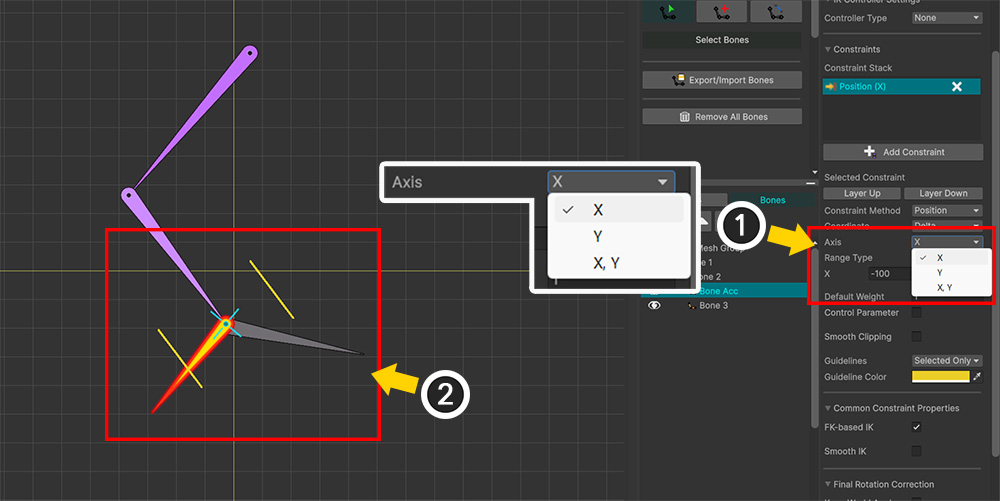
Let's change the area of the constraint.
(1) Select an Axis. You can restrict movement along the X or Y axis individually, or restrict both the X and Y axes simultaneously. In this example, the X axis has been selected.
(2) You can see that the guideline is drawn only for the selected axis.
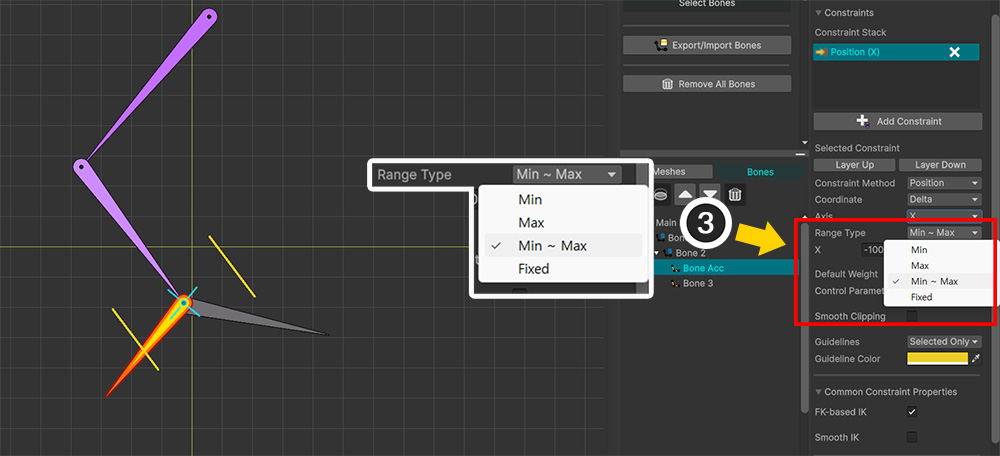
(3) Change the value of Range Type.
You can specify either the maximum range, the minimum range, or both.
Selecting "Fixed" sets the transform value to a specific, fixed value.
In this example, "Max" was selected.
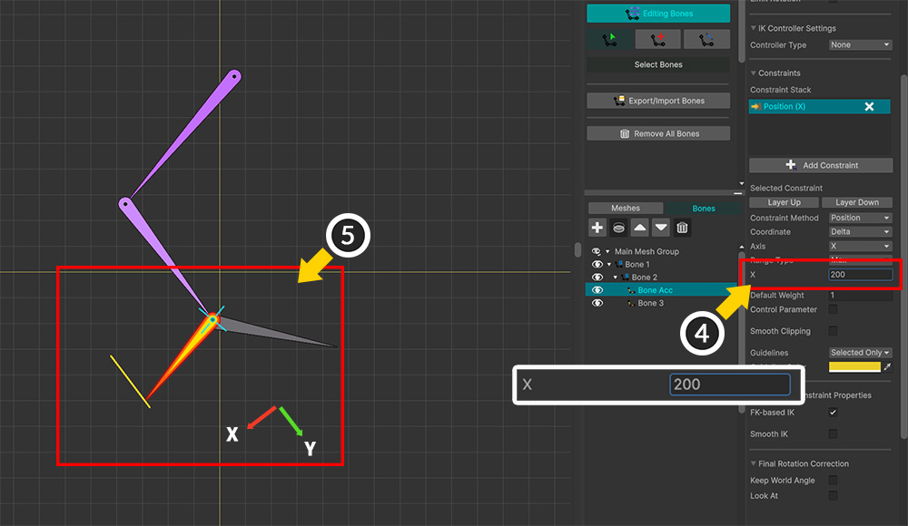
(4) Enter the range values.
(5) You can see the guidelines drawn according to the specified axis, limit range type, and values.
In the Delta coordinate system, the constraint range is set as shown above because it is based on the parent bone's coordinate system.
Completing the steps above finishes the basic setup for the Bone Constraint.
Let's take a look at a few more options in this example.
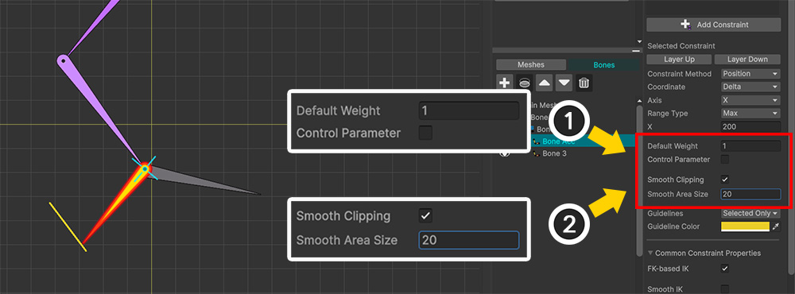
(1) These are options related to Weight. If Weight is less than 1, the extent to which the constraint is applied is reduced. It can also be linked to a control parameter.
(2) Enabling Smooth Clipping allows the transform to be limited smoothly near the boundaries of the range.
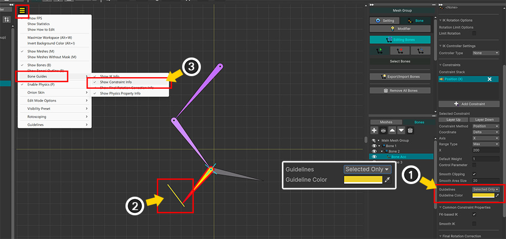
(1) This option determines how the guidelines are displayed. The Guidelines option has the following settings: "Hidden," "Always" (visible regardless of selection), and "Selected Only" (visible only when the bone is selected).
(2) Guidelines are drawn in the workspace based on the specified color and style.
(3) Additionally, you can globally show or hide the guidelines via the View Menu > Bone Guides > Show Constraint Info option.
Once the option settings are complete, let's test the Bone Constraint.
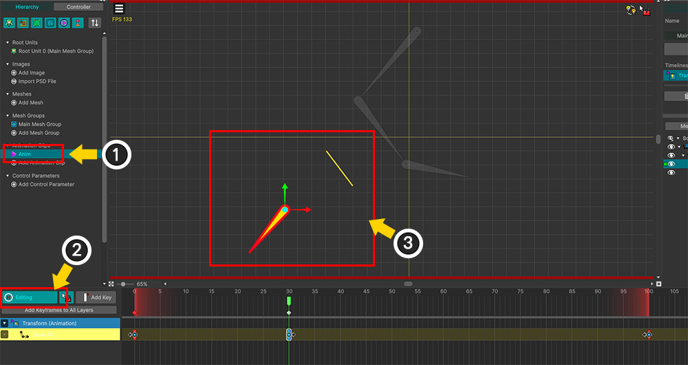
Let's create a simple animation to test the Bone Constraint.
(1) Create an animation clip.
(2) Enable Edit Mode.
(3) Register the bone with the applied constraint to the animation, then move it.
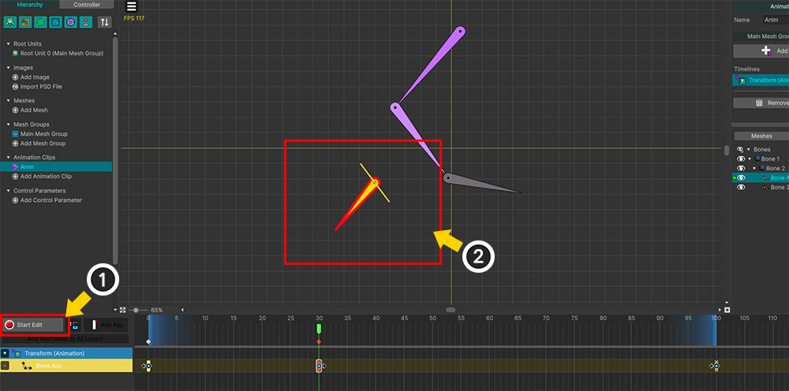
(1) Turn off Edit Mode.
(2) You can see that the bone's position is restricted to the range defined by the constraint.
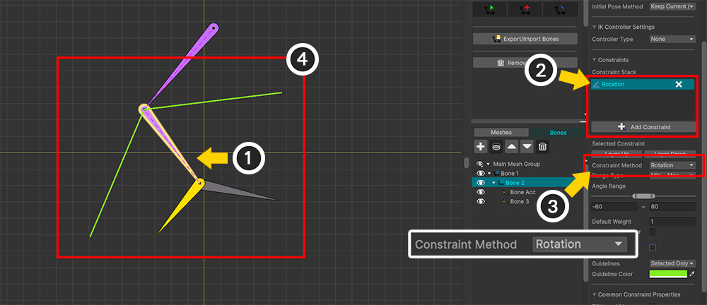
Now, let's set up a constraint to limit the bone's rotation.
(1) Select the bone to which you want to apply the constraint.
(2) Click the Add Constraint button to add a constraint.
(3) Set the Constraint Method option to "Rotation."
(4) You will see a guideline appear, indicating the rotation range.
For rotation, the range is defined based on the bone's default angle (in the local coordinate system).
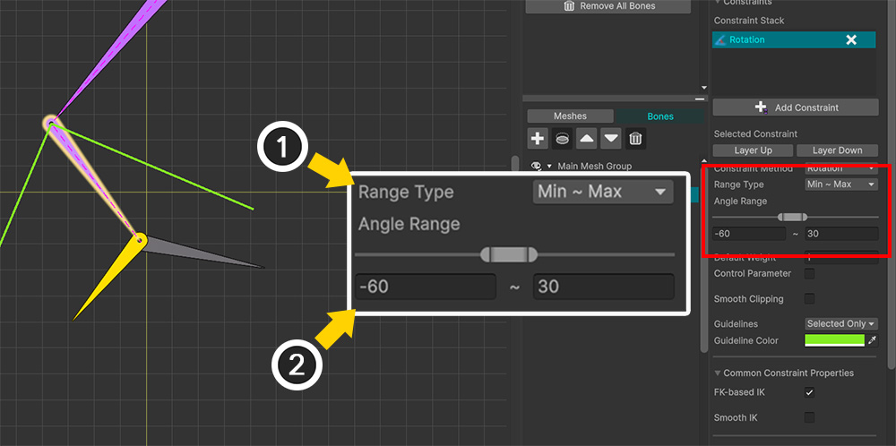
Set the rotation range.
(1) Set the Range Type value to "Min ~ Max".
(2) Set the Angle Range value appropriately.
Note
For constraints of the "Rotation" type, the Coordinate option does not appear due to the nature of the constraint; instead, it always operates in "Delta" mode.
Additionally, regarding the Range Type, only "Min ~ Max" and "Fixed" options are available, given the rotational nature of the constraint.
Now that the basic setup for the constraint is complete, let's take a closer look at Weight options.
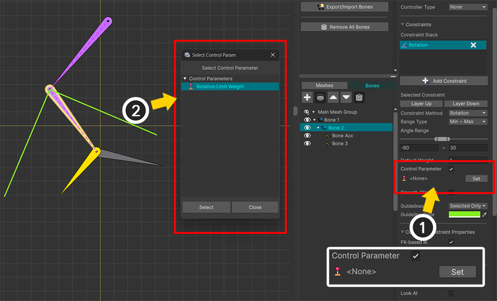
By default, the degree to which the constraint is applied (ranging from 0 to 1) is determined by the Default Weight option.
However, if you link a Control Parameter to this option, the constraint intensity can be adjusted in real time.
(1) Enable the Control Parameter option among the "Weight" settings and click the Set button.
(2) Select a Control Parameter of the Float type and click the Select button.
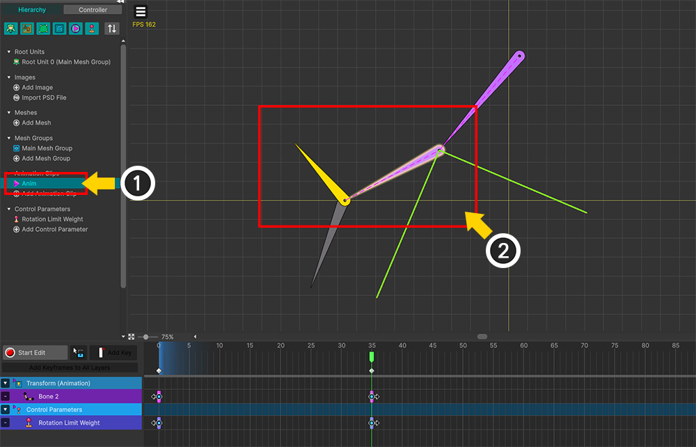
(1) Create an Animation Clip for testing.
(2) Create an animation that rotates the bone.
Currently, since no constraint is applied, you can see the bone rotating beyond the set range.
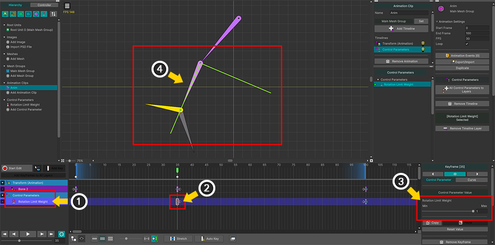
(1) Register the Control Parameter linked to the Bone Constraint in the animation.
(2) Add a keyframe.
(3) Set the Control Parameter value to 1.
(4) You can see the constraint functioning fully, with the bone's rotation limited to the specified range.
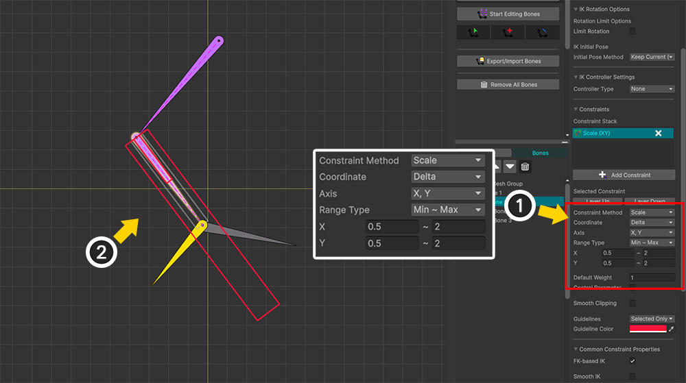
You can constrain the size of a bone using the "Scale" constraint.
(1) Configure the coordinate system, axes, and range limits as shown above.
(2) Several rectangular guidelines indicating the size will appear in the workspace; the gray rectangle represents the default size.
The "Scale" constraint in the Delta coordinate system offers options similar to the "Position" constraint and functions in much the same way.
However, the "Scale" constraint differs in that the range values must always be positive.
This is because the "Scale" constraint does not account for the inversion of the bone's scale.
Now, let's set the Coordinate value to "World."
While both "Position" and "Scale" constraints support the "World" coordinate system, they operate differently.
Additionally, the behavior and results of the "Position" constraint vary depending on whether IK is used.
In this example, we will apply the "World" coordinate system to a "Position" constraint without using IK.
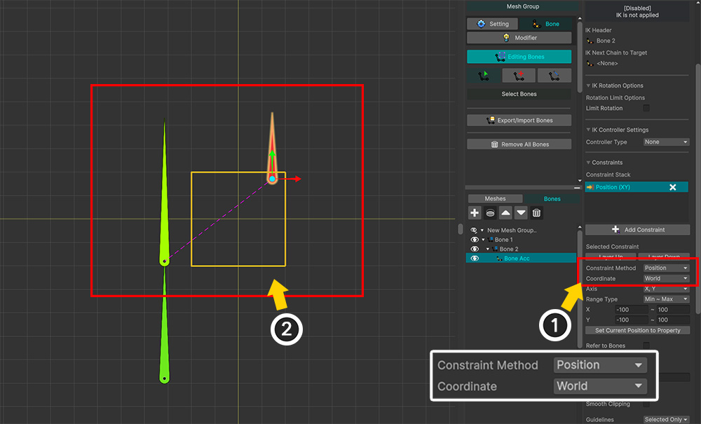
(1) After adding and selecting a constraint, set the Constraint Method to "Position" and the Coordinate to "World".
(2) You can see that the guideline's coordinate system is drawn based on the World coordinate system, independent of the bone.
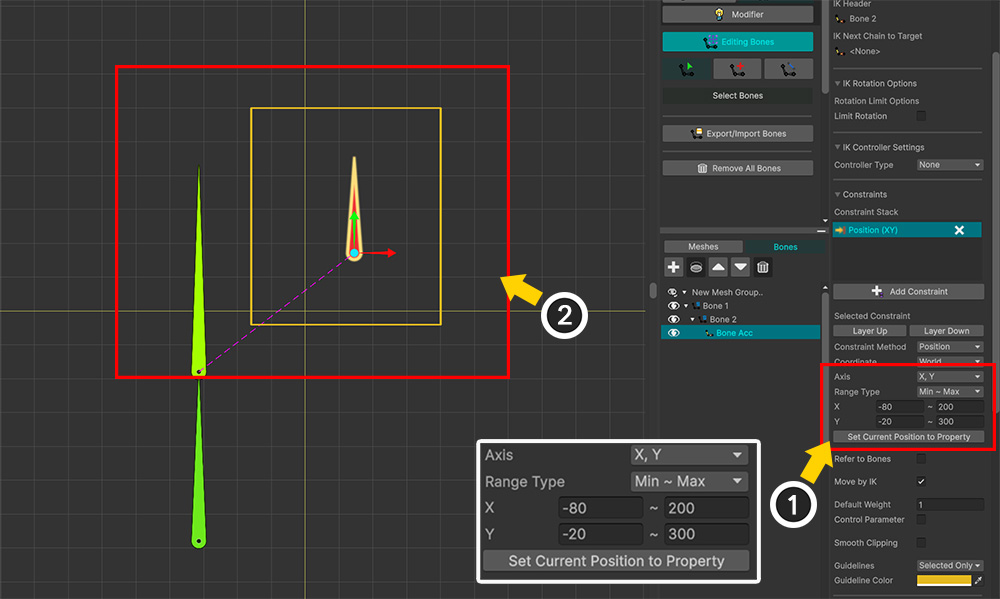
(1) Set the axes and values for the position limit range. Since it can be difficult to define the range in the world coordinate system, clicking the Set Current Position to Property button inputs the bone's current position into the range settings; you can use this as a reference to determine and enter the appropriate values.
(2) You can view the defined constraint area within the workspace.
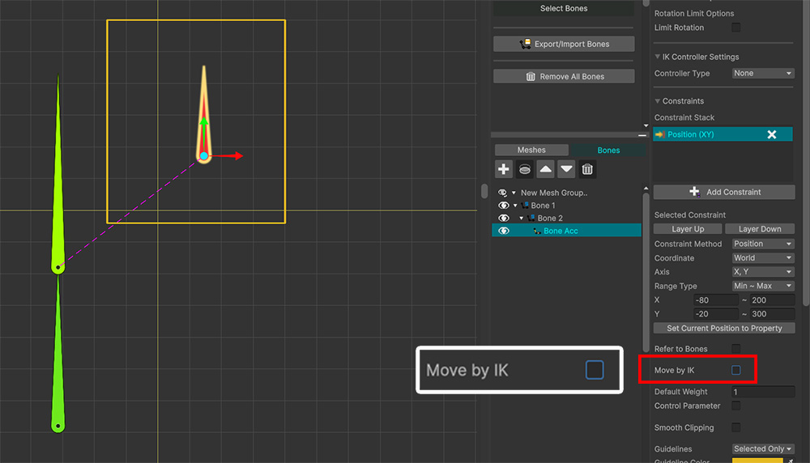
Move by IK option determines whether to use IK when constraining the position.
In this example, we will test without IK, so we will uncheck it.
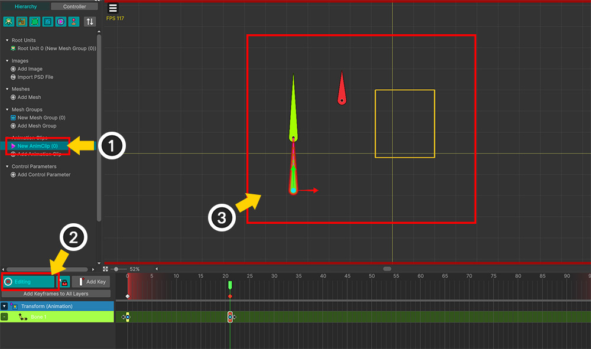
(1) Create an Animation Clip for testing.
(2) Enable Edit Mode.
(3) This time, we created an animation where the parent bone moves in order to observe the characteristics of the "World" coordinate system.
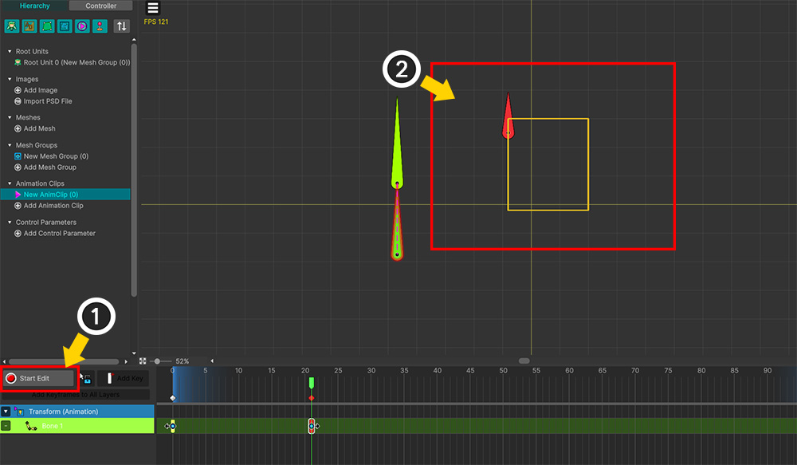
(1) Turn off Edit Mode.
(2) You can see that the bone with the constraint applied does not move outside the set range, even though the parent bone has moved.
You can see that the "World" coordinate system constraint operates based on the overall pose, regardless of modifier or animation values.
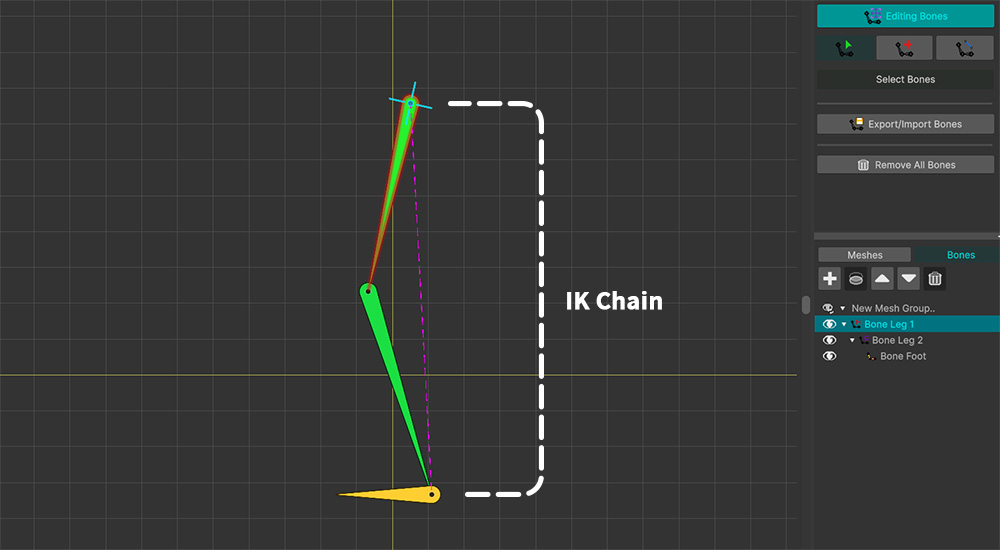
Now, let's look at the "Position + World" constraint that utilizes "IK."
To use this constraint effectively, an IK chain must be set up as shown above.
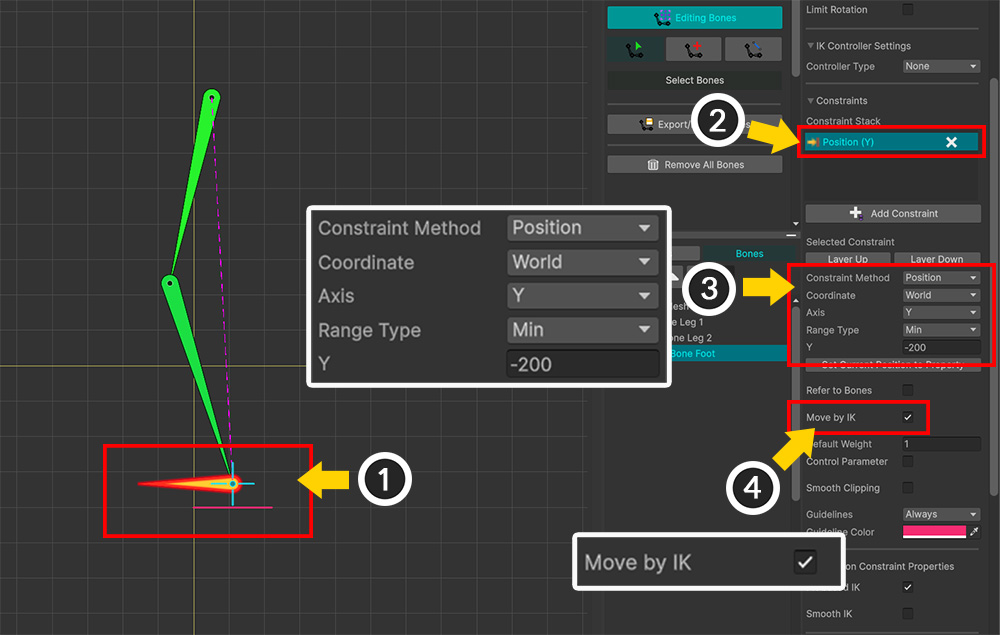
(1) Select the bone with the IK chain set up.
(2) Click the Add Constraint button to add a constraint.
(3) Configure the constraint to use the "Position" and "World" settings as shown above, and enter appropriate range values.
(4) Enable the Move by IK option.
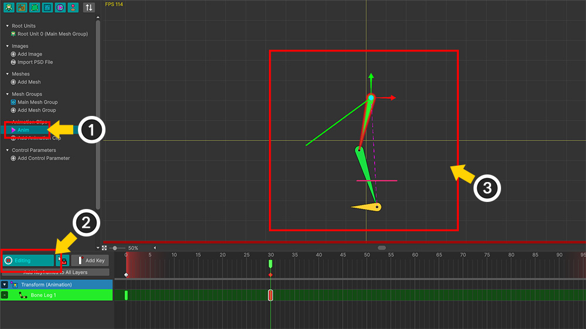
(1) Create an Animation Clip.
(2) Enable Edit Mode.
(3) Move the root bone of the IK chain to trigger the constraint.
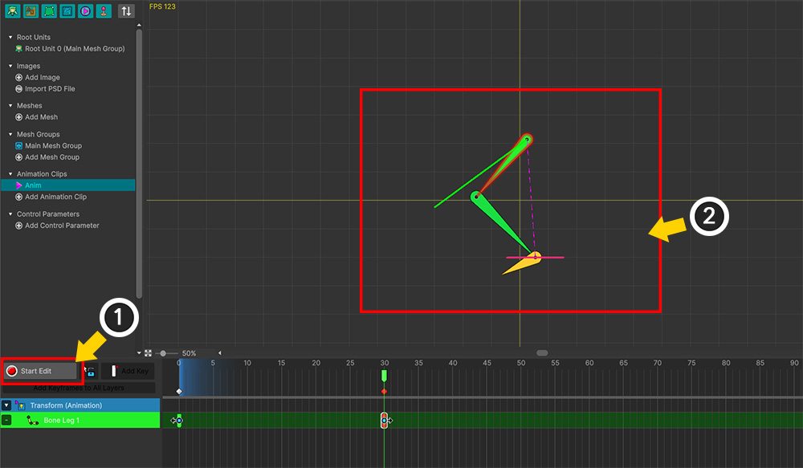
(1) Turn off Edit Mode.
(2) You can see the "Position" constraint in action. You can also observe how this constraint causes the pose of the entire IK chain to change via IK.
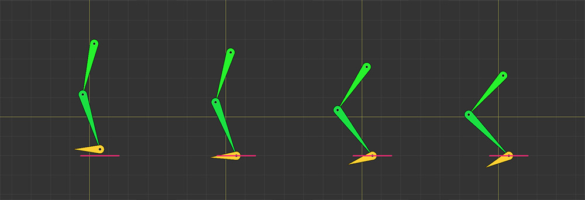
This demonstrates how constraints function in conjunction with IK.
As shown in the results above, this type of constraint is highly effective for implementing features such as "preventing a walking character's feet from sinking into the ground".
Let's explore using constraints more flexibly with other options.
Until now, we have manually entered values to define the constraint range.
This method is cumbersome and does not allow for real-time adjustments.
However, using the position of "another bone" as the constraint range value can solve this problem.
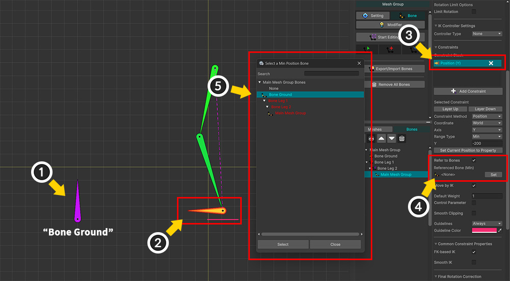
(1) Add a new bone named "Bone Ground" to serve as the "ground" height reference.
(2) Select the bone belonging to the IK chain that has a constraint applied.
(3) Select the previously created constraint.
(4) Enable the Refer to Bones option and click the Set button.
(5) Select "Bone Ground" and click the Select button.
The Refer to Bones option allows you to reference other bones to substitute values within the specified range.
You can assign different bones to the X and Y axes, as well as to the minimum and maximum ranges.
If no bone is assigned, the entered numerical value is used.
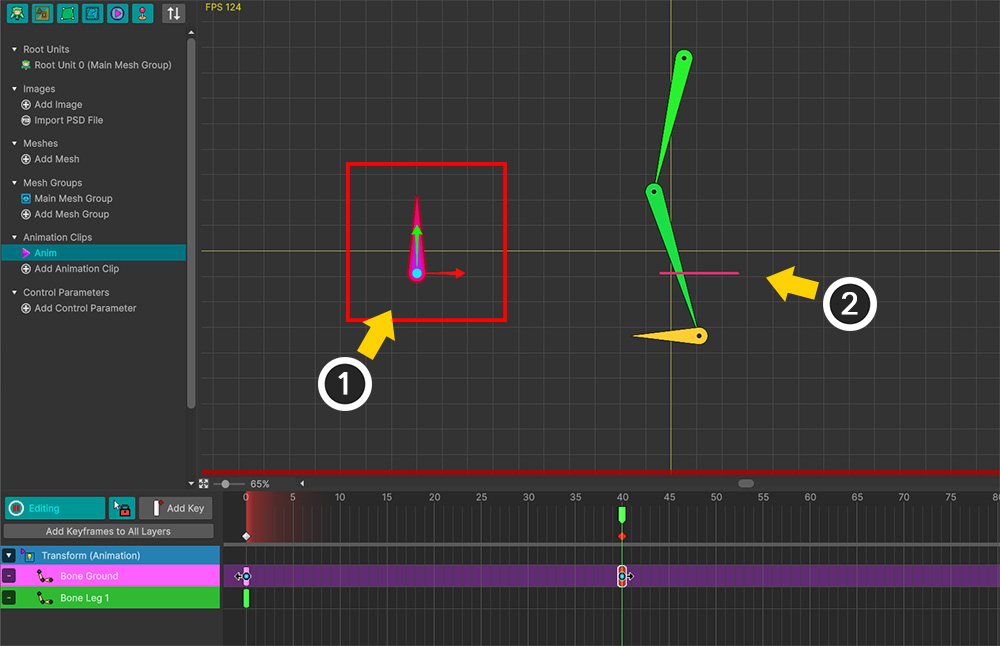
Let's test this on the animation editing screen.
(1) If you move "Bone Ground," you can see (2) the guideline moving along with it.
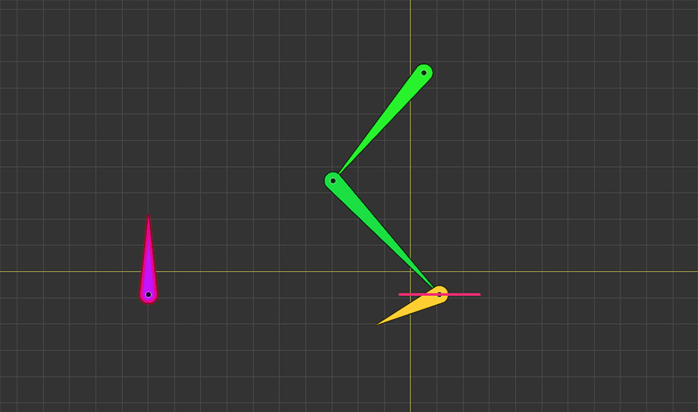
If you exit Edit Mode in this state, you can see the constraint operating based on the Y-position of "Bone Ground."
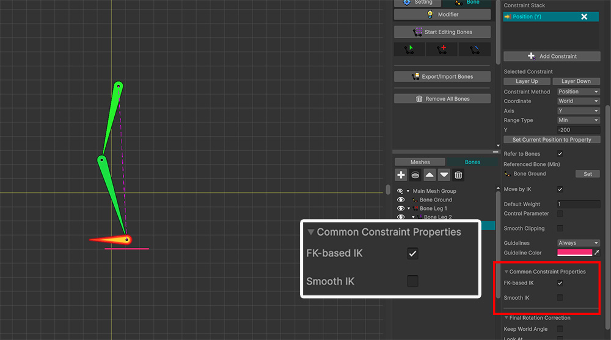
Let's explore the options used in the "Position + World (IK)" Constraint.
The "Common Constraint Properties" section includes the FK-based IK and Smooth IK options.
These options are utilized when IK operates via the constraint.
First, let's look at the function of the FK-based IK option.
When a bone is moved by multiple constraints utilizing IK, the position determined by the constraints is calculated first.
Then, IK is executed once to move the bone to that position.
Therefore, IK-related options are not configured for each individual constraint.
FK-based constraints are processed in a batch before the IK calculation.
However, IK-based constraints are processed during the IK calculation itself.
The processing order is: "FK via Modifiers/Animation > FK-based Constraints > IK Controller > IK-based Constraints > Final Rotation Correction > Jiggle Bones."
IK constraints utilize the IK chain's options, just like the IK controller.
In other words, the IK angle limits or initial pose apply in the same way.
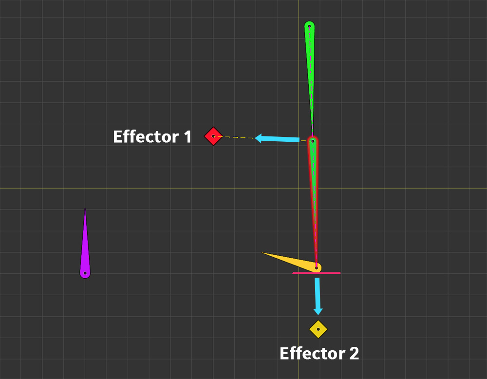
The FK-based IK option determines how the initial pose is set when constraint-based IK operates.
When the FK-based IK option is enabled, IK calculations are performed based on the pose defined by FK.
When the FK-based IK option is disabled, IK calculations are performed based on the pose immediately preceding the application of the constraint; this means the result may be influenced by factors such as constraints on other bones or IK Controllers.
So, to verify the effect of this option, we will use the IK Controller.
As shown above, we have set up an IK Controller that connects two Effector Bones to a single IK chain.
Note
If the "Initial Pose" option within the IK chain is set to "Prefer Angle," the distinction between FK-based IK and other modes may not make a significant difference.
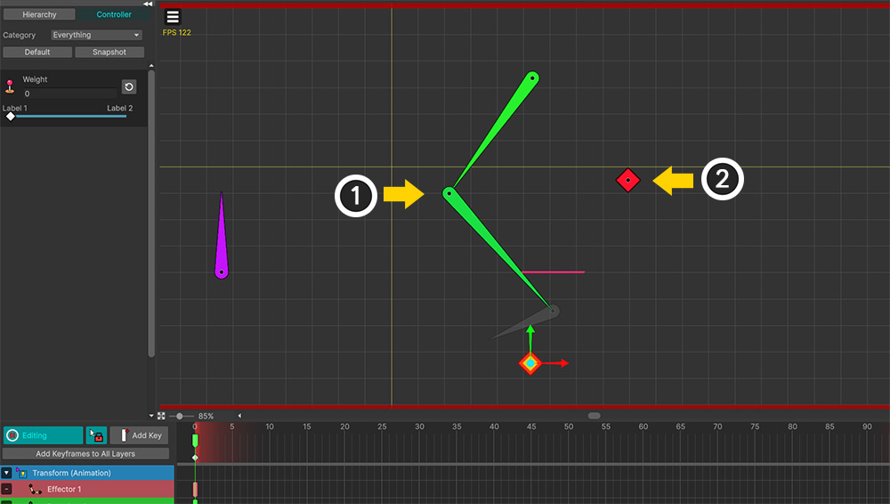
We performed the editing shown above on the animation editing screen.
(1) We created a keyframe animation (FK) so that the IK chain bends to the left.
(2) Conversely, we positioned the Effector Bone on the right.
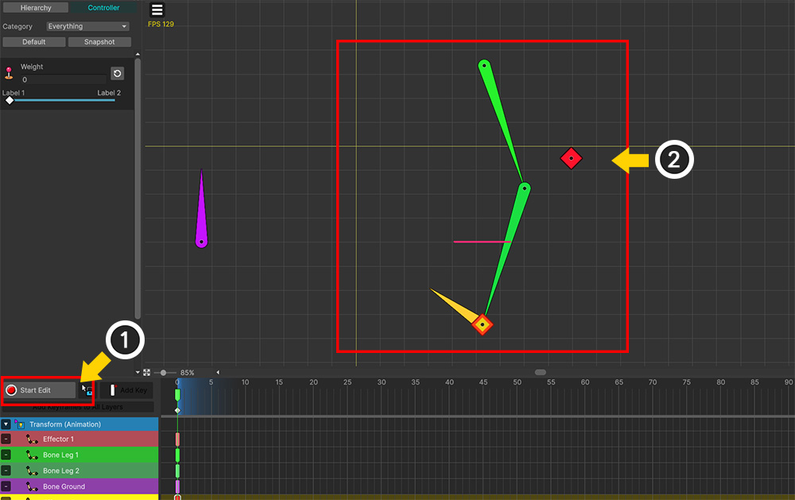
(1) Turn off Edit Mode.
(2) You can see that the joints of the IK chain are bent to the right—opposite to the FK pose—due to the Effector Bone and IK Controller.
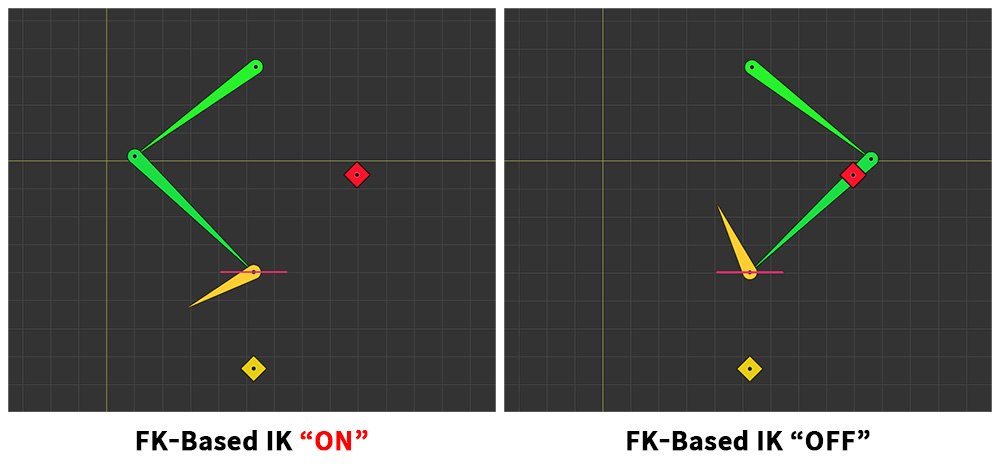
Let's activate the constraint in this state.
In the result on the left, where FK-based IK is enabled, the constraint and IK operate with the joint bent to the left based on the FK pose.
Conversely, in the result on the right, where FK-based IK is disabled, the constraint operates based on the output of the IK Controller.
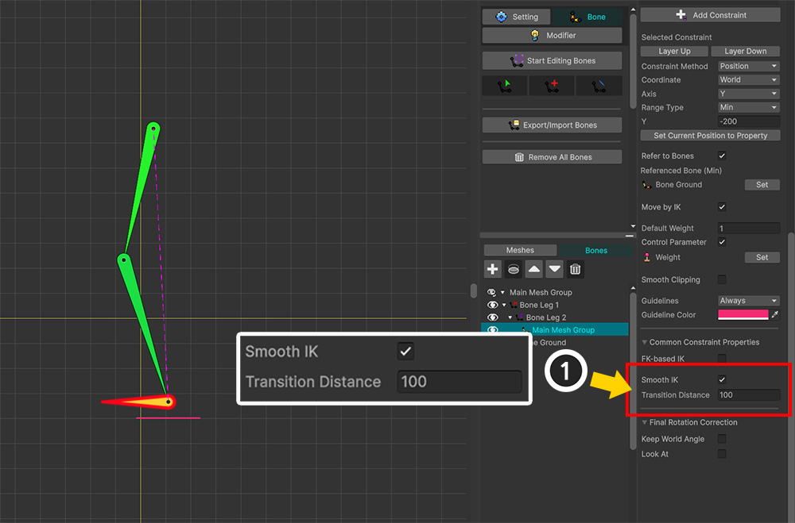
Next, let's look at the "Smooth IK" option.
This option gradually increases the IK weight when a constraint is applied.
Since the weight is adjusted in proportion to the distance from the limit range, you need to input a distance value.
(1) Enable the Smooth IK option and set the Transition Distance to a sufficiently large value to make it easier to observe the effect.
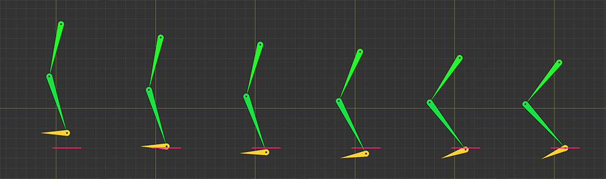
Let's create a simple animation where a bone moves downward to observe how the constraint is applied.
You can see that even after the constrained bone reaches its limit, it briefly moves further down before returning upward.
This occurs because Smooth IK causes the IK weight to increase gradually, resulting in a reduced constraint effect during that interval.
This mechanism allows you to soften the constraint boundaries and create smoother motion.
Among the constraint options, there is Smooth Clipping.
This option also adjusts the constraint's strength near the limit boundaries to produce smooth motion.
The difference is that while Smooth IK adjusts the "IK weight," Smooth Clipping adjusts the "constrained transform values."
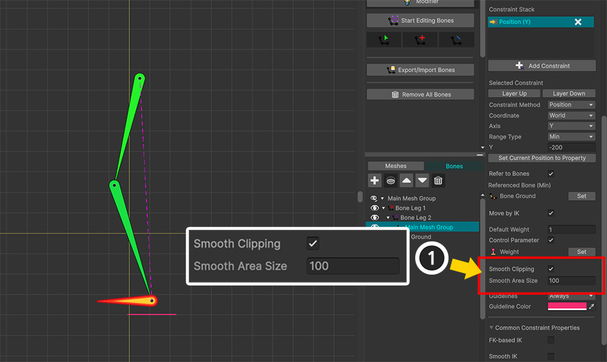
(1) Enable the Smooth Clipping option and set the Smooth Area Size appropriately.
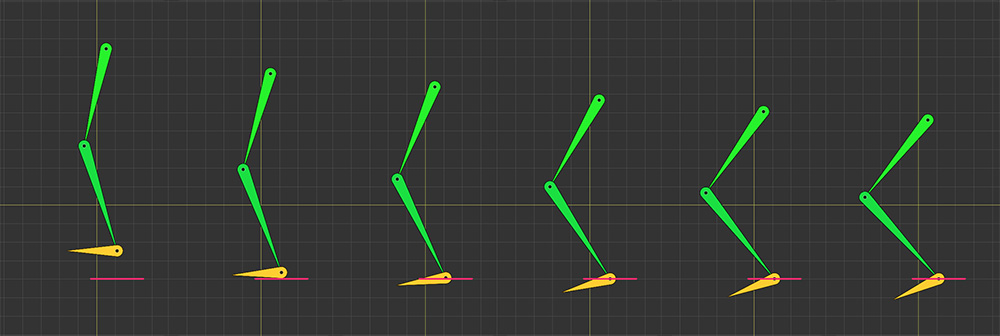
These are the results of playing back the same animation.
Unlike the result with Smooth IK, you can see that with Smooth Clipping, the bone does not move outside the constraint's range.
This is due to the nature of the Smooth Clipping option, which gradually limits the bone's position while ensuring it stays within the specified range, independent of the IK system.
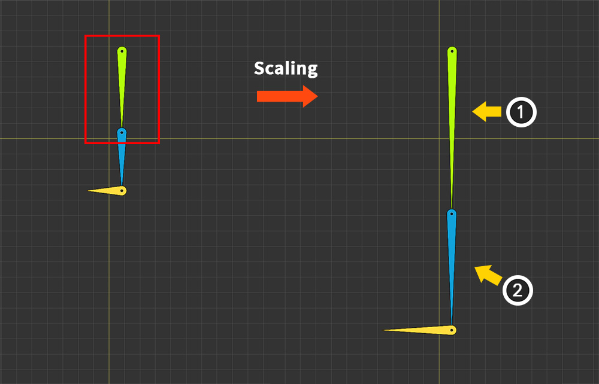
The "Scale" and "World" combination constraint serves a specific purpose.
(1) The standard skeletal operation involves child bones scaling proportionally when (2) the parent bone's scale changes.
However, there are times when you might want to limit the scale of child bones or lock it entirely, independent of the parent bone's scale.
This is where the "Scale + World" constraint is used.
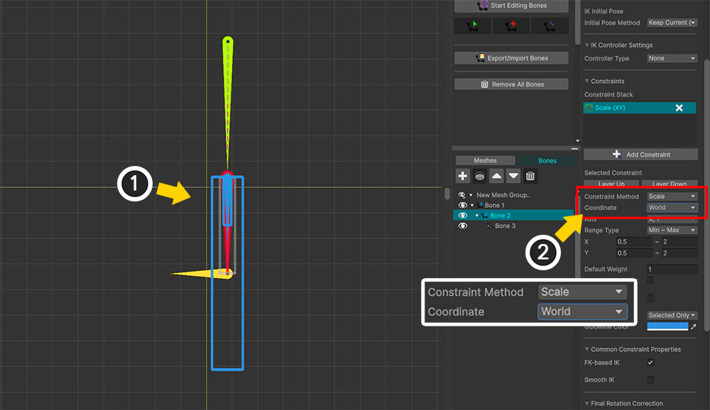
(1) Select the child bone for which you want to fix the scale.
(2) Add a constraint, and set the Constraint Method to "Scale" and the Coordinate to "World".
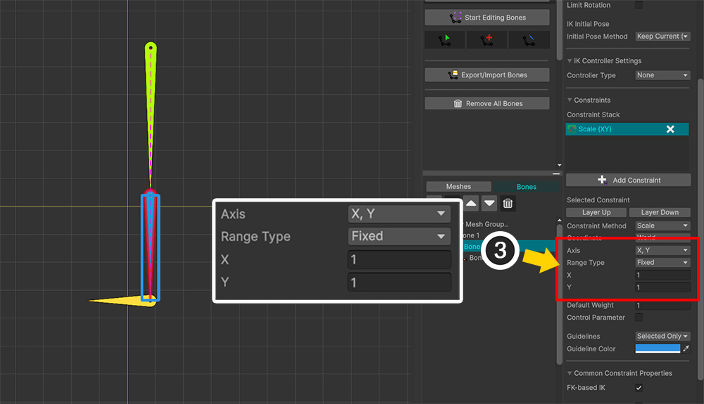
(3) Set the Axis value to "X, Y" and the Range Type value to "Fixed," then configure the settings so that the size for each axis is fixed at 1.
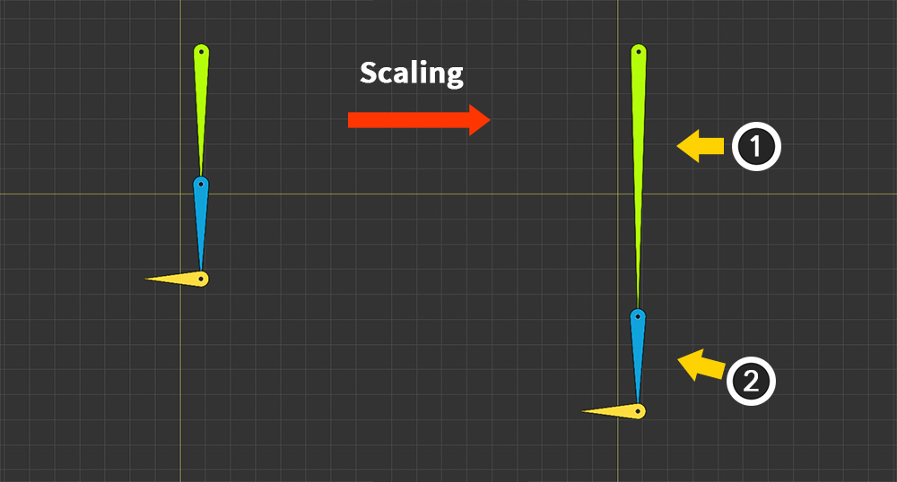
Now, you can see that the size of the child bone does not change even if the size of the parent bone is altered.